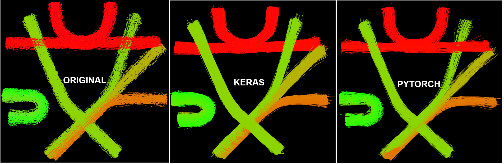

Week 4 into GSoC 2024: Weight transfer experiments, hardships, and results!#
What I did this week#
Well, this week was really intense. I spent most of the time trying to transfer the weights from the pre-trained PyTorch model of the TractoInferno dataset to the Keras model. I must say that thanks to the reduced size of the AutoEncoder, it was feasible to do it layer by layer without going crazy.
PyTorch uses a channels first convention, whereas TensorFlow uses channels last, what means that all the weights in the convolutional layers had to be transposed.
This was the easiest part, as it was just a matter of using np.transpose.
After addressing the convolutional layers, I set a common input for both networks, and I compared their outputs. As expected, they were not the same, and they were not even close enough.
Thus, matching the behavior of the PyTorch model with the Keras implementation became my objective. To achieve so, I run a common input through all the layers of both models sequentially, and systematically compared the outputs of each layer.
In the Encoder block, I found all the outputs to be within a reasonable range of each other (MAE = 1e-6), except for the last two operations, which flatten the output of the 1D convolutional layers and then feed it to a fully connected layer.
This was partially good news, because most of the Encoder was behaving as desired, but, the most challenging part was adapting the flattening and reshaping operations happening in the Encoder and the Decoder, respectively.
As the Keras 1D convolutional output dimensions do not follow the same ordering as in PyTorch, ([n, m, channels] vs [n, channels, m]), the flattening behavior of the models was different (the elements followed a different sorting when being concatenated into a 1D array), and thus, the fully connected layer of the Encoder (named fc1) was receiving different inputs.
To solve this, I first reshaped the output of the Keras 1D convolutional layer to match the PyTorch channels first convention, and then applied the flattening.
This effectively resulted in a within-reasonable-error (MAE = 1e-6) output of the Encoder block. Problem solved! The Decoder block was a bit more challenging, because the PyTorch implementation was using linear interpolation in its torch.nn.Upsample layers.
For this, I had to implement a custom layer in Keras that would perform the same operation, as linear interpolation is unavailable in the tf.keras.layers.UpSampling1D layers. I made this workaround using the tf.image.resize function, tricking the function into taking a modified 1D tensor to be a pseudo 2D tensor.
The errors in the Decoder block are higher than in the Encoder but we assumed that a MAE of around 1e-3 is acceptable.
On the other hand, I started implementing the dataset loading using HDF5 files, but I set that aside because it is not priority.
Finally, my mentor Jon Haitz kindly provided me with the weights of the PyTorch AE he trained on the FiberCup dataset, and he suggested an experiment consisting of encoding the FiberCup tractogram with my Keras model, and Decoding it with the PyTorch model to see if the Encoder works properly. This was indeed the case, as the PyTorch model effectively reconstructed the tractogram, but unfortunately the Keras encoder was not capable of giving the same result. Naturally, this suggests that the Keras Decoder implementation is still not similar enough to the PyTorch one, so there is still room for improvement. Despite not being successful, this experiment was very enlightening, and it gave me a lot of insight into the differences between the two implementations.
In a last effort to get to replicate the PyTorch model results, I went on to train the my Keras architecture on the FiberCup dataset with the same parameters as my mentor used in his GESTA paper to see if the results I get are similar to the ones he got. Well, this resulted in amazing results, as you can check visually in the figure below. Note that none of the models were able to capture the depth dimension of the streamlines, but this is not concerning. It can be solved reducing the latent dimension size to 16 (it is 32 now).
{kind=link}
What is coming up next week#
Next week we will start working on a conditional version of the AutoEncoder, which should give us the ability to generate tractograms conditioned on a specific scalar input. This will be a very interesting feature to have because we can get tractograms with properties of interest. Well, this is the main goal of this project. We decided to focus on developing a conditional version of the AE over adding the latent space sampling because the code for the latter is already available in the tractolearn repository, so we can postpone it for now.
Did I get stuck anywhere#
Of course I got stuck, but as the project has an explore and research nature, I would not really call this being ‘stuck’. Things got hard at some points, but we found ways to solve them. I am very happy with the progress we are making and I am also very excited to see where we can get with the conditional AutoEncoder.
Until next week!